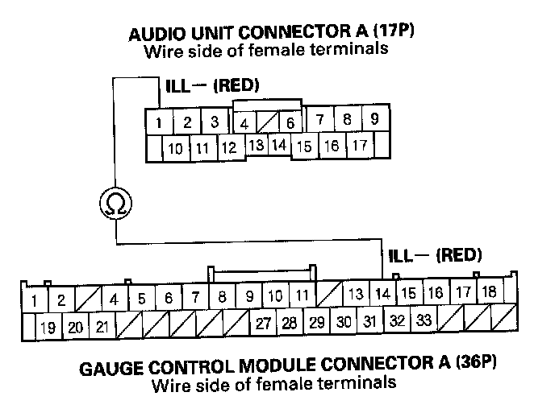
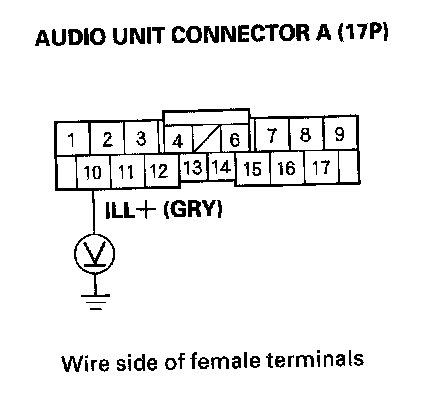

Audio Unit Button Illumination Does Not Work (Without Navigation)
Audio unit button illumination does not work (without navigation)1. Turn the ignition switch to ON (II).
2. Turn the combination lighting switch to the parking light position.
3. Check the illumination or the audio unit buttons.
Are the buttons illuminated?
YES - Intermittent problem: the audio unit is OK at this time. Check for loose or poor connections at the audio unit connector A (17P).
NO - Go to step 4.
4. Check the illumination of several other buttons not related to the audio system.
Are the buttons illuminated?
YES - Go to step 5.
NO - Troubleshoot the interior lights. Start by checking the No. 14 (7.5 A) fuse in the under-dash fuse/relay box. If the fuse is OK, check for an open in the wire between the under-dash fuse/relay box and the audio unit.
5. Turn the ignition switch to LOCK (0).
6. Disconnect audio unit connector A (17P).
7. Disconnect gauge control module connector A (36P).

8. Check for continuity between audio unit connector A (17P) NO.1 terminal and gauge control module connector A (36P) No. 14 terminal.
Is there continuity?
YES - Go to step 9.
NO - Repair open in the wire between the gauge control module and the audio unit.
9. Turn the ignition switch to ON (II).

10. With the headlight switch still on, measure the voltage between audio unit connector A (17P) No. 10 terminal and body ground.
Is there battery voltage?
YES - Check the connections at audio unit connector A (17P). If all the connections are OK, replace the audio unit.
NO - Repair open in the wire between the under-dash fuse/relay box and the audio unit.